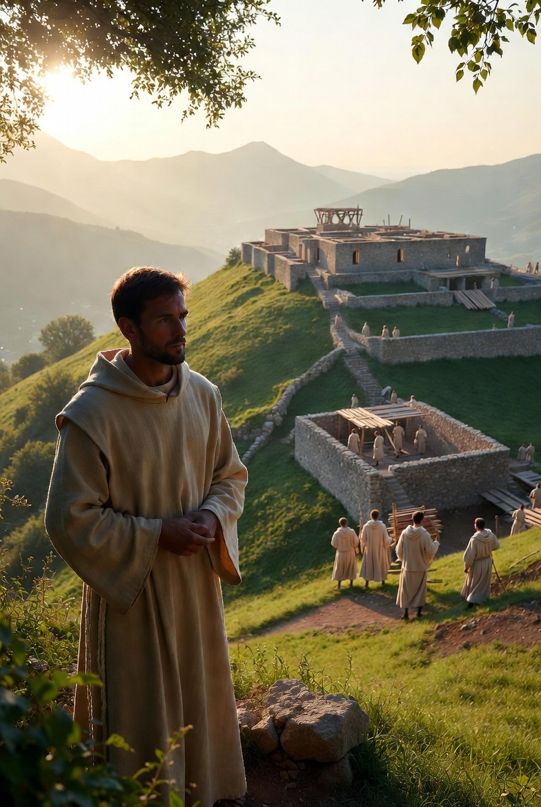
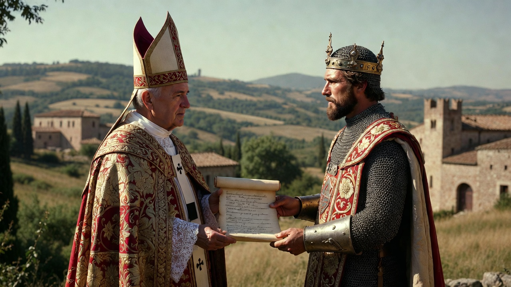
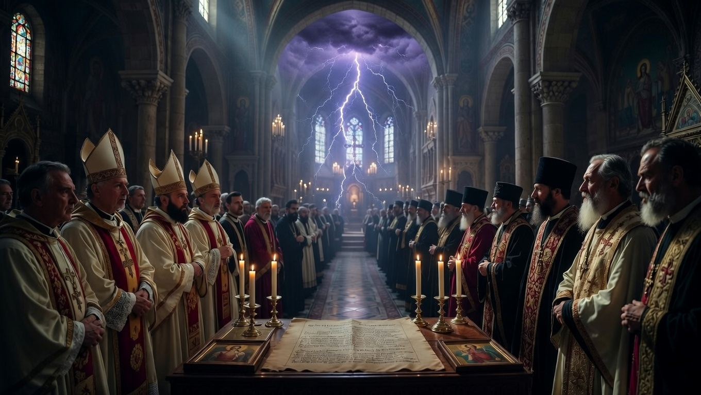
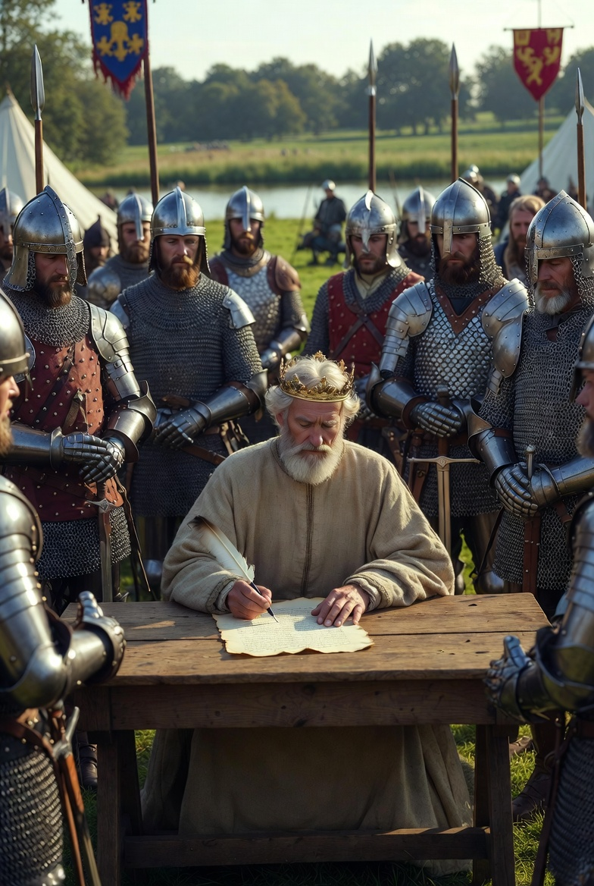
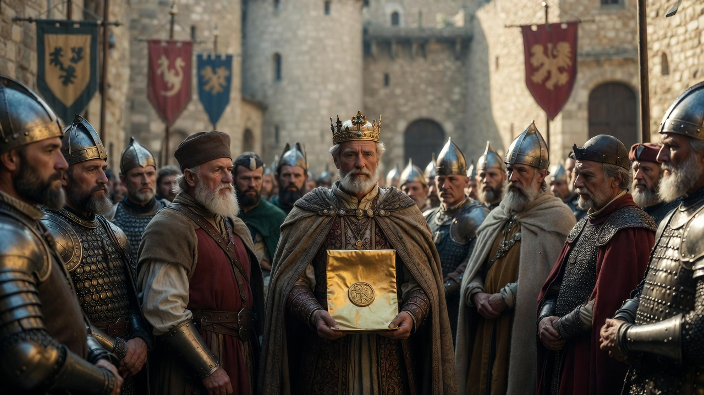

476-A Nyugatrómai Birodalom bukása
A Nyugatrómai Birodalom bukását tekintjük a középkor kezdetének.

529-Nursiai Szent Benedek
Nursiai Szent Benedek monostort alapít Monte Cassino hegyén.

756-Keresztény egyházi állam létrejötte
A keresztény egyházi állam az Appennini-félsziget északi részén jött létre.

1054-Nagy egyházszakadás
Skizma, vagyis az egyházszakadás. Ekkor kivált a Római Katolikus egyházból a Görögkeleti Egyház.

1215-Magna Carta
Magyarul a "Nagy Szabadságlevél", az angol jogrendszer egyik alapja.

1222-Aranybulla
A magyar nemesek jogait és kiváltságait irta le .